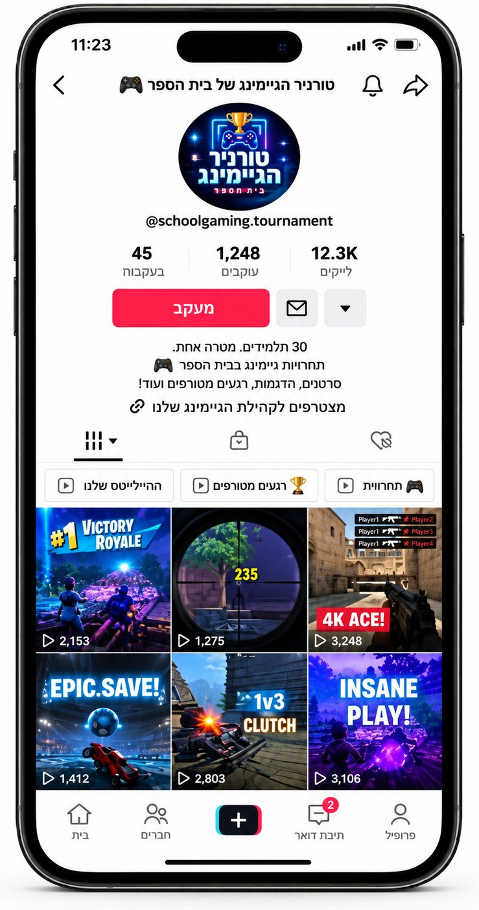
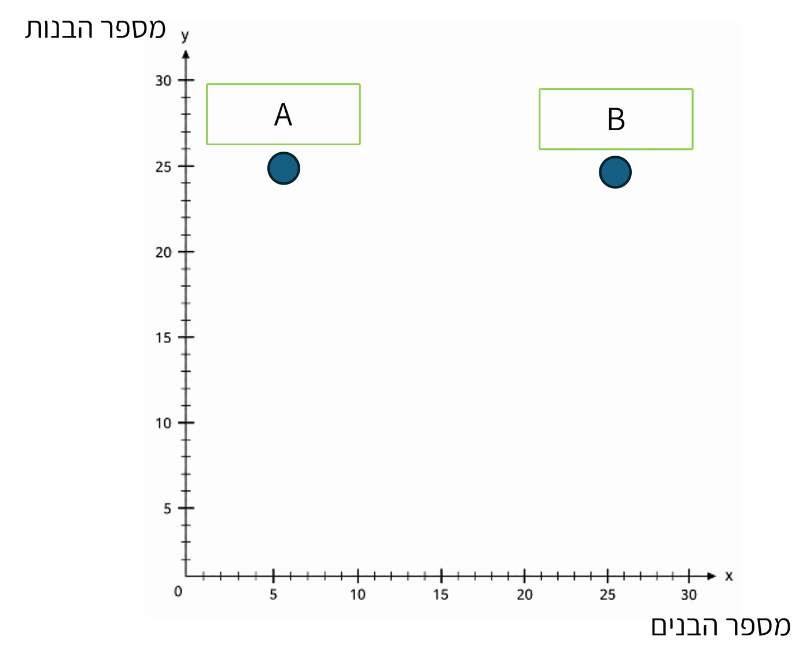
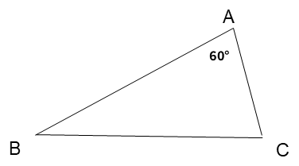

סיימנו את שלב הלימוד, נעבור לתרגול ונענה על
4 שאלות
צריך לענות נכון על 3 שאלות לפחות.
1. בטורניר הגיימינג השנתי של בית הספר, קבוצה של 30 תלמידים פתחה ערוץ משותף ברשת כדי להעלות סרטונים מהטורניר.
התלמידים חילקו ביניהם את העבודה לשני תפקידים בלבד:
חלקם שחקנים שיצלמו את עצמם משחקים וחלקם עורכי וידאו.
על כל 3 עורכי וידאו יש 7 שחקנים.
ענו על השאלות הבאות:

2. קבוצת תלמידים פתחה שידור חי בערוץ בסטרימינג.
בתחילת השידור, היו בצ'אט 30 משתתפים.
היחס בין מספר הבנים למספר הבנות היה 1:5.
לאורך זמן השידור הצטרפו לצ'אט רק בנים, והיחס בין הבנים לבנות השתנה ל-1:1.
לפניכם ציר מספרים - ציר ה-X מייצג את מספר הבנים, וציר ה-Y מייצג את מספר הבנות.
השלימו את הנתונים בהתאם לגרף:



3. משרד אדריכלות מתכנן מבנה ציבורי חדש בעל גג זכוכית בצורת משולש.
האדריכלית הראשית קבעה כלל כי אחת מזווית המשולש חייבת להיות
בת 60° (∢BAC = 60°).
האדריכליות החליטו כי היחס בין גדלי שתי הזוויות האחרות של משולש הגג יהיה בדיוק 5 : 3
א. סמנו את הגודל המדויק של שתי הזוויות האחרות במבנה המתוכנן:
ב. האדריכליות שוקלות לשנות את הזווית הידועה (∢BAC = 60°), אך להשאיר את
היחס בין שתי הזוויות האחרות כמו שהיה - 3:5.
קבעו לגבי כל אחת מהטענות הבאות האם היא נכונה או לא נכונה:
הקטנה מבין השתיים האחרות, תהיה בת 30°.
הזוויות האחרות חייב להיות מספר שמתחלק ב-8 ללא שארית.
מהזוויות האחרות של המשולש תהיה זווית ישרה.
4. מאמן שחייה משווה בין נתונים של שחיינית ושחיין שהצטיינו לאורך העונה:
שחיין א' (דניאל): היחס בין מספר ניצחונות לבין מספר המישחים שהשתתף בהם הוא 3:5.
שחיינית ב' (נופר): היחס בין מספר ניצחונות לבין מספר המישחים שהשתתפה בהם הוא 3:8.
א. דניאל ונופר השיגו אותו מספר ניצחונות.
מבלי לחשב, מי מבינהם שחה ביותר מישחים לאורך העונה?
ב. מי ניצח ביותר מישחים העונה?
בהנחה ששניהם השתתפו באותו מספר מישחים.
ג. ידוע כי דניאל ניצח ב-12 מישחים כל אחד במהלך העונה.
השלימו: